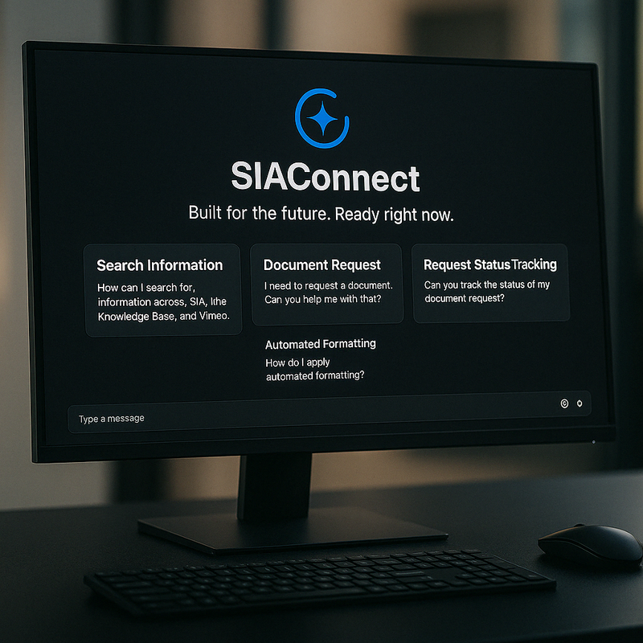

Ways to access SIAConnect
Mobile

Access through your company provisioned mobile device
Desktop
Access through your PC
Access through your company provisioned mobile device
Access through your PC
Manuals and guides Repair steps Unit conversion
Knowledge base Manuals and guides Document summaries
Document Request Reporting Training class
Instantly find product documents, technical manuals, and KB articles from SharePoint (SIA) and Dataverse.
Use Microsoft Teams to submit new document requests or check Jira request status—all within the chat interface.
Convert between metric and SAE units on the fly—handy for field technicians and engineers in a hurry.
Search our Vimeo library and get direct links to training and support videos organized by product line.
Automates Jira creation, SharePoint document searches, and KB lookups using secure flows.
Stores knowledge articles, request metadata, and user preferences in a scalable low-code database.
Uses Microsoft Entra ID to personalize experiences and restrict access based on user role.
Creates, updates, and monitors request tickets without ever leaving Microsoft Teams.
Searches technical documents and manuals stored in the SIA document library using smart metadata filtering.
Intelligent summarization, fallback response logic, and enhanced personalization are in development using OpenAI models.
A glimpse into what’s coming next for SIAConnect
Manage class signups, track attendance, and send post-training surveys automatically.
Let users save documents, videos, or KB articles and view frequently accessed content first.
Confirm who’s seen what by linking interactions to each employee’s Entra ID.
Drop in a PDF, generate a summary, and create a Knowledge Base article automatically.
Snap a photo of a product component and let SIAConnect identify it—powered by AI image recognition.
Consolidates access to disparate information into one seamless interface.
Streamlines information retrieval and enhances productivity.
Integrates seamlessly with Microsoft Teams and other existing applications (e.g., SharePoint).
Ensures easy access anytime, anywhere for users..
Adaptable to future changes in business needs and technology.